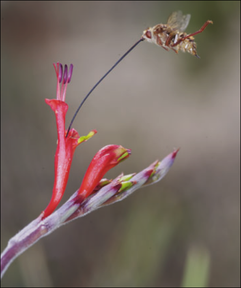
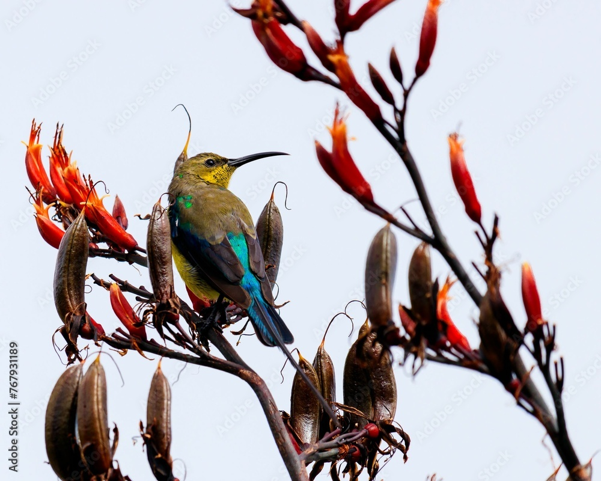

Some Weird Flies
and the plants they pollinate
dr tny bb -
PP NITE -
Ghost Mountain
Some Unusual Specimens
Distributed Across South Africa
Pollination Syndrome
The Craziest (M. longirostris + L. anceps)
proboscis’s and tubes ~ 40mm-80mm
Nature of the Interaction
Data Suggests…
these flowers are total size queens
Pollen Deposit Sites on M. longirostris
- maintains floral reproductive isolation
- typically dusts the fly body with pollen
Pollen Mass Deposition
- Prosoeca ganglbauri (tangle-vein)
- Disa scullyi (orchid)
- in contrast to dusting strategy
- pollen sacks attached to base of fly proboscis
Darwins Hawkmoth Prediction
Revisiting the Data
flies reward longer flowers (mutual size-queens => selection for longer parts)
A mutualistic arms race!

Indirect Consequences of Coevolution
remember these bees ??
Indirect Consequences of Coevolution

Fly visits Babiana thunbergii

Malachite Sunbirds pollinate B. thunbergii
Take-Away: these flies are big deals